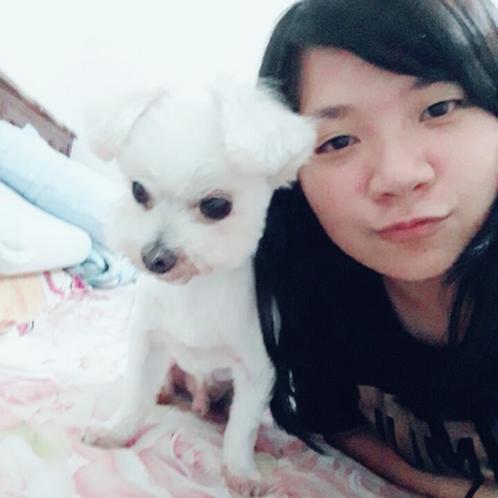
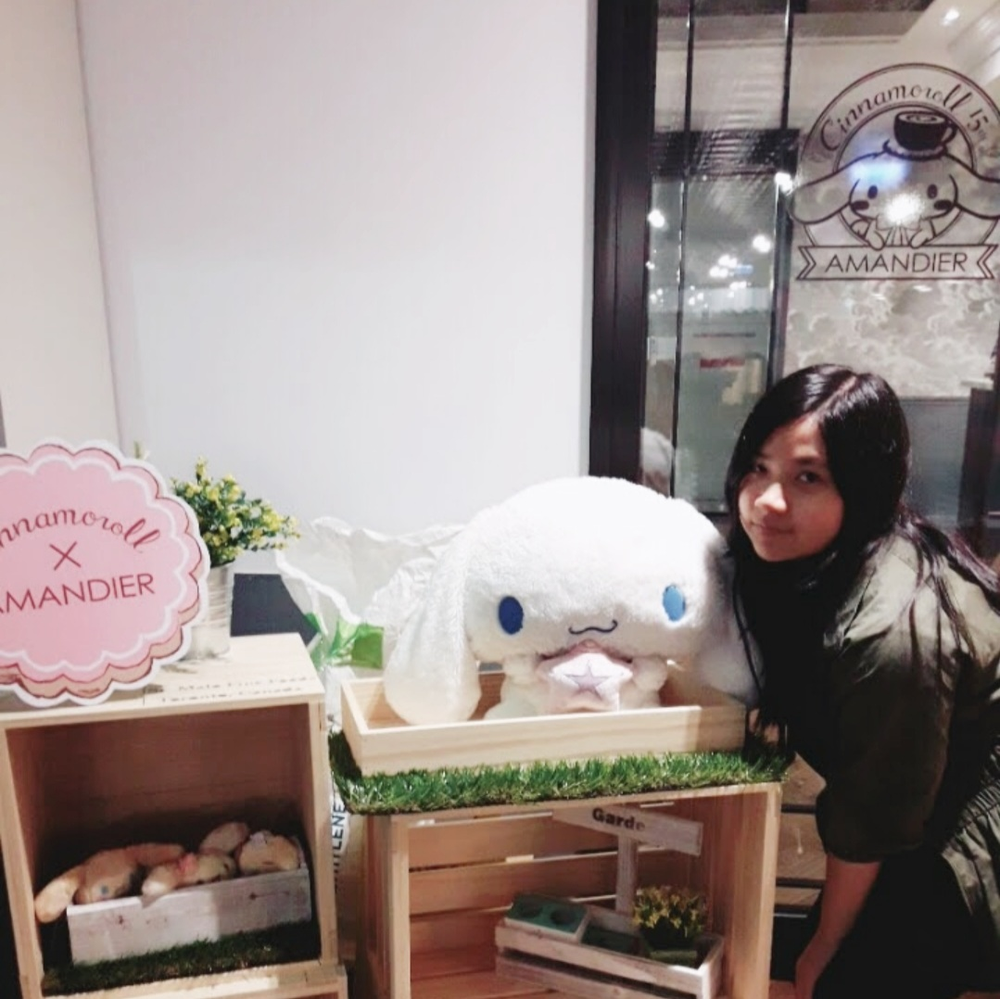
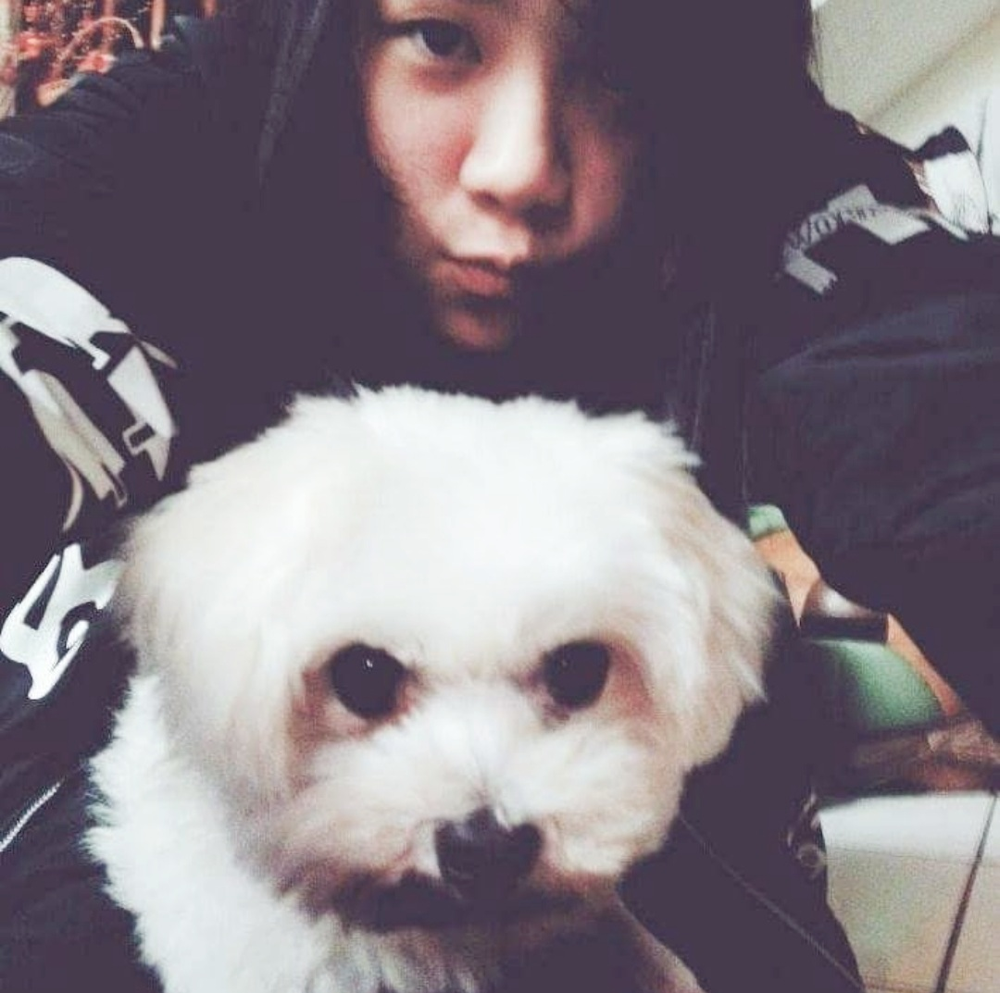
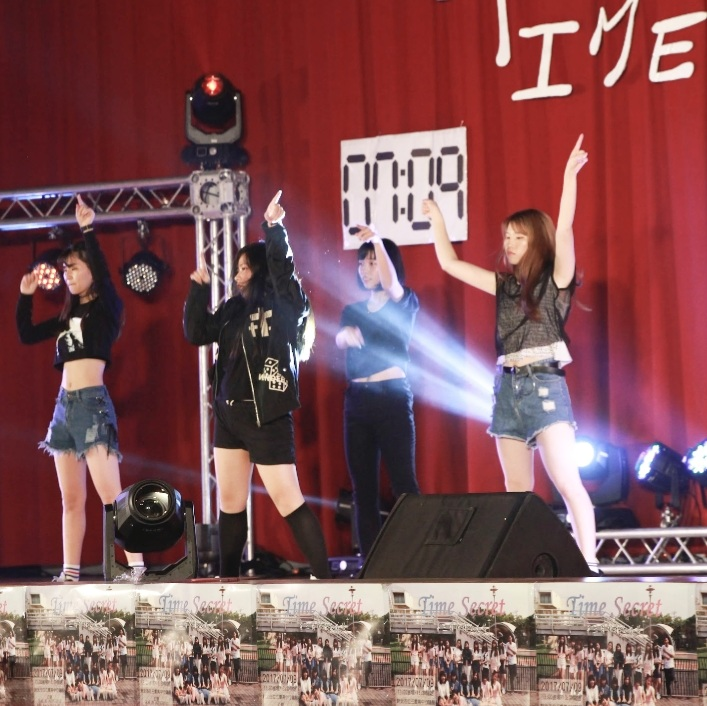
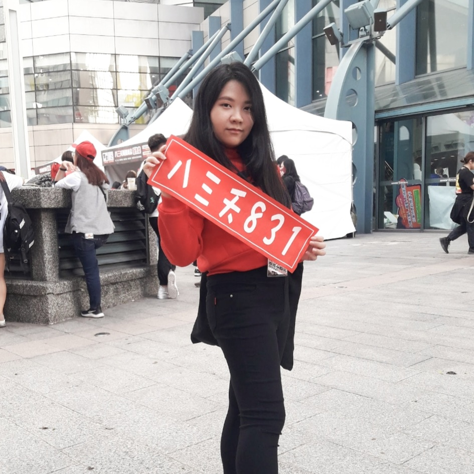

November 8 1999
This Is Me





Bacon ipsum dolor amet capicola strip steak landjaeger, biltong spare
ribs rump cow ground round andouille sirloin pork. Short ribs pig
prosciutto swine. Flank turducken turkey rump, leberkas shoulder
bresaola ham hock tail drumstick corned beef. Venison pork chop beef
jowl short ribs.
Bresaola short ribs pastrami, beef ribs spare ribs kielbasa ham tongue
kevin landjaeger chicken ball tip. Pork chop beef kevin strip steak,
chicken pork belly pastrami ham hock flank shoulder chuck turkey ribeye
andouille ball tip. Leberkas ham ham hock pork loin. Filet mignon bacon
pancetta leberkas turducken fatback tongue frankfurter jowl. Shoulder
tenderloin chicken shank bacon shankle sirloin.
Pork pig pork loin prosciutto meatball turkey beef ribs ground round.
Pork belly salami shank pork chop turducken ribeye swine shoulder
tri-tip fatback cupim short loin chuck strip steak. Rump pork chop
t-bone.
October 15 2021
This Is Another Article
Bacon ipsum dolor amet capicola strip steak landjaeger, biltong spare
ribs rump cow ground round andouille sirloin pork. Short ribs pig
prosciutto swine. Flank turducken turkey rump, leberkas shoulder
bresaola ham hock tail drumstick corned beef. Venison pork chop beef
jowl short ribs.
Shankle beef ribs tongue strip steak flank landjaeger capicola hamburger
chuck pancetta kevin. Sirloin landjaeger chicken, bresaola brisket swine
short ribs turkey short loin ball tip porchetta ham hock. Capicola
frankfurter jowl short loin. Kevin flank hamburger, beef venison shankle
short loin bresaola frankfurter
Bresaola short ribs pastrami, beef ribs spare ribs kielbasa ham tongue
kevin landjaeger chicken ball tip. Pork chop beef kevin strip steak,
chicken pork belly pastrami ham hock flank shoulder chuck turkey ribeye
andouille ball tip. Leberkas ham ham hock pork loin. Filet mignon bacon
pancetta leberkas turducken fatback tongue frankfurter jowl. Shoulder
tenderloin chicken shank bacon shankle sirloin.